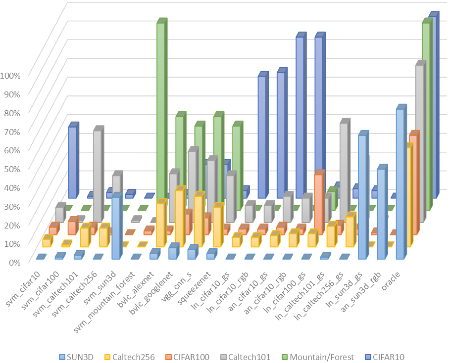
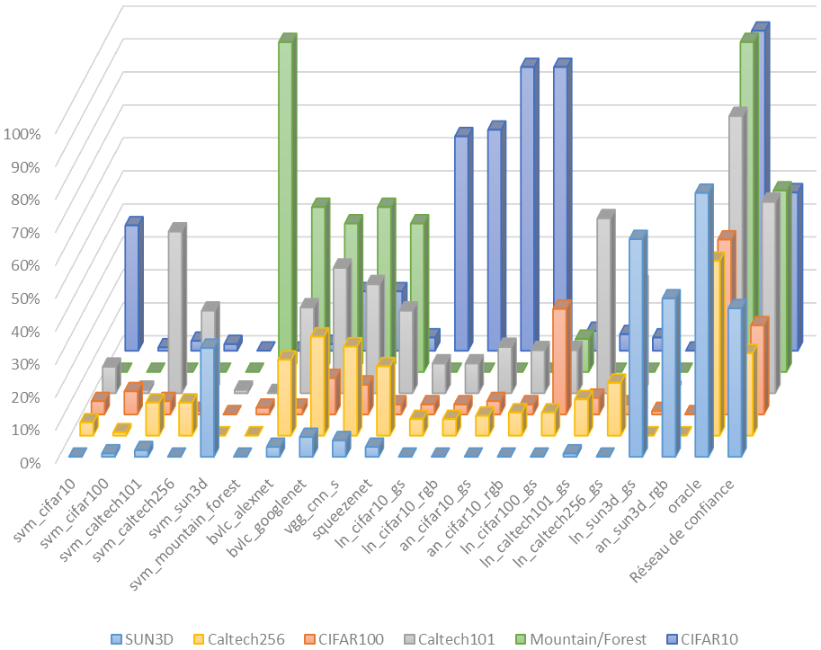
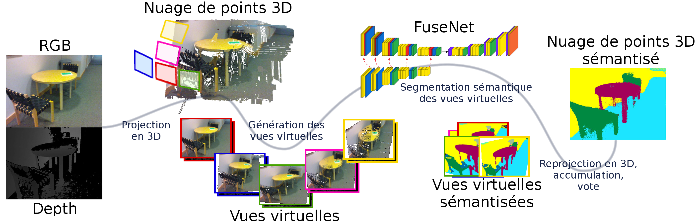

Reconnaissance visuelle robuste par réseaux de neurones dans des scénarios d’exploration robotique.
Détecte-moi si tu peux !
pré-Soutenance de thèse de
Joris GUERRY
pour l'obtention du grade deDocteur en Informatique
de l'Université Paris-Saclay
 |
 |
 |
 |
| David Filliat | Bertrand Le Saux |
| Directeur de thèse | Encadrant |
La reconnaissance visuelle,
quelques exemples


- un environnement,
- un sujet,
- un point de vue,
- un instant figé,
- une histoire,
- des souvenirs,

Plus qu'un objet, c'est un concept.
 |
 |
 |
 |
Tortoise (Grey Walter - 1950) |
 |
 |
Asimo (Honda - 2000) |
 |
 |
Handle (Boston Dynamics - 2016) |
Computer vision is concerned with [...] automatic visual understanding. The British Machine Vision Association and Society for Pattern Recognition
Transition : Alors qu'est-ce que ça veut dire donner du sens au image ? Et bien tout d'abords intéressons nous rapidement à qu'est-ce que c'est qu'une image ?
Qu'est-ce qu'une image ?
Qu'est-ce qu'une image ?

Qu'est-ce qu'une image ?

$Image\in[0:255]^{W \cdot H \cdot D}$
Image de Kinect (640, 480, 3) $\rightarrow$ $256^{640 \cdot 480 \cdot 3} = $ $ 10^{2219434}$ images potentielles
Nombre d'atomes dans l'univers $ \approx 10^{80}$
Un espace de représentation
pour une tâche donnée

Les tâches de la vision par ordinateur

Les tâches de la vision par ordinateur
"YOLO9000: better, faster, stronger." (2016) Redmon and Farhadi
"Segnet: A deep conv. encoder-decoder architecture for image segmentation." (2015) Badrinarayanan, Kendall and Cipolla
"Mask r-cnn." (2017) He, Gkioxari, Doll&aeacute;r and Girshick
La classification

La tâche de classification consiste à partir d'une image en représentation RGB et d'arriver à l'attribution d'une classe. Dit autrement, on part d'un espace en grande dimension que sont l'espace des images pour arriver à estimer un vecteur qui mesure l'appartenance aux N classes. DOnc on arrive dans un espace en N dimension.
Autrement dit on cherche à partitionner l'espace RGB en N classes. Or pour faire des partitions on mesure les similarités entre les vecteurs d'un espace et le problème c'est que en grande dimension la notion de similarité, autrement dit de distance, perd de sa valeur.
En effet, chaque dimension est une occasion de plus pour deux vecteurs de s'éloigner (exemple des villes). --> Du coup on cherche à diminuer la taille de l'espace de représentation avant de commencer a faire du partitionnement.


 |
|
| SUMMIT XL de Robotnik™ | |
|
|
Fusion vs. Sélection


Preuve de concept
Réseau de confiance


LeNet (1998 LeCun) &
AlexNet (2012 Krizhevsky)

Complémentarité des méthodes

|
|
 |

|
Performance du réseau de confiance


Cas applicatif n°1
6 jeux de données :

|

|

|

|
||
| CIFAR10 | CIFAR100 | Caltech101 | Caltech256 | SUN3D | Mountain/Forest |
HoG+SVM et 5 CNNs (AlexNet, LeNet, GoogleNet, SqueezeNet, VGG16)
Cas applicatif n°1
Corrélation Méthodes/Jeux de données
Corrélation Méthodes/Jeux de données
Corrélation Méthodes/Jeux de données
Cas n°1 : Résultats quantitatifs
|
|
Cas applicatif n°2
1 seul jeu de données : ImageNet
4 méthodes de classification : AlexNet, GoogleNet, SqueezeNet, VGG16
Cas applicatif n°2

Réseau de confiance "DoFeaNN" : Domain Features Neural Network
Cas applicatif n°2

| Méthode | Top-1 score (%) | Temps de calcul cumulés |
| AlexNet | 83,2 | 41,98 s |
| GoogleNet | 82,3 | 67,16 s |
| VGG | 83,9 | 73,88 s |
| SqueezeNet | 80,4 | 100,74 s |
| Oracle | 93,2 | 476,43 s |
| RC Dofeann + méthodes choisies | 83,8 | 129,4 s |
Conclusion I - Sélection d'algorithmes
- Le concept de réseau de confiance a du potentiel
- Deux situations :
- données facilement séparables (cas 1)

- données difficilement séparables (cas 2)
- Structure DoFeaNN inadaptée


Image RGBD


Détecteur RGBD
Gating Network

"Choosing smartly: Adaptive multimodal fusion for object detection in changing environments." IROS (2016) Oier Mees, Andreas Eitel, and Wolfram Burgard
Détecteur RGBD
Gating Network

"Choosing smartly: Adaptive multimodal fusion for object detection in changing environments." IROS (2016) Oier Mees, Andreas Eitel, and Wolfram Burgard
Détecteur RGBD
Notre objectif

Détecteur RGBD
Faster RCNN

"Faster R-CNN: Towards real-time object detection with region proposal networks." NIPS (2015) Ren, Shaoqing, et al.
Détecteur RGBD
Notre objectif : R&M CNN

Détecteur RGBD
Notre objectif : R&M CNN

Détecteur RGBD
Nos méthodes :

Résultats
Jeu de données : RGBD People

| Méthode | Source | EER |
|---|---|---|
| HOD (SPINELLO et ARRAS 2012) | D | 56.3 |
| HGE (SPINELLO et ARRAS 2012) | RGB-D | 87.4 |
| Gating Network (MEES et al. 2016) | RGBD-Optical flow | 89.3 |
| Faster RCNN (Ren et al. 2015) | D | 98.3 |
| Faster RCNN (Ren et al. 2015) | RGB | 98.4 |
| U | RGB-D | 98.4 |
| Y | RGB-D | 98.3 |
| X | RGB-D | 98.6 |
Résultats
Jeu de données : InOutDoor RGBD People
| Méthode | Source | PM | EER |
|---|---|---|---|
| Gating Net, MEES et al, [2016] | RGB-D | 80,4 | – |
| Faster RCNN (Ren et al. 2015) | RGB | 91,9 | 90,1 |
| Faster RCNN (Ren et al. 2015) | D | 84 | 84,8 |
| U | RGB-D | 94,4 | 92,1 |
| X | RGB-D | 94,3 | 92,4 |
| Y | RGB-D | 90,2 | 90,1 |
| U* | RGB-D | 84 | 84,8 |
| X* | RGB-D | 84,1 | 84,8 |
| Y* | RGB-D | n.a | n.a |
Nouveau jeu de données : ONERA.ROOM
"Look At This One" Detection sharing between modality-independent classifiers for robotic discovery of people (2017) Joris Guerry, Bertrand Le Saux et David Filliat
Résultats
Jeu de données : ONERA.ROOM
| Méthode | Source | PM | EER |
|---|---|---|---|
| Faster RCNN (Ren et al. 2015) | RGB | 91,2 | 91 |
| Faster RCNN (Ren et al. 2015) | Depth | 66,9 | 68,3 |
| U | RGB-D | 90,6 | 88 |
| X | RGB-D | 91,3 | 89,1 |
| Y | RGB-D | 87,1 | 90,3 |
| U* | RGB-D | 67 | 68,3 |
| X* | RGB-D | 66,7 | 68,1 |
| Y* | RGB-D | n.a | n.a |
Résultats de détection multimodale
Conclusion II - Détection multimodale
- trois nouvelles architectures de détection (U,X,Y)
- nouvelles références sur deux jeux de données RGBD :
RGBD People & InOutDoor RGBD People - création et mise à disposition d'un nouveau jeu de données RGBD complexe : ONERA.ROOM
Image RGBD
Image RGBD
Jeu de données : SUNRGBD


"Unstructured point cloud semantic labeling using deep segmentation networks." Eurographics Workshop on 3D Object Retrieval (2017) Alexandre Boulch, Bertrand Le Saux and Nicolas Audebert
SnapNet→SnapNet-R

"Fusenet: Incorporating depth into semantic segmentation via fusion-based cnn architecture." ACCV (2016) Hazirbas, Caner, et al.
SnapNet→SnapNet-R

SnapNet→SnapNet-R

Résultats
Jeu de données : SUNRGBD 37 classes
| Expérience | Source | Précision | Précision Moyenne | IoU moyen |
|---|---|---|---|---|
| LSTM-CF [Li et al, 2016] | RGB | – | 48,1 | – |
| FCN 8s [Long et al, 2015] | RGB | 68,2 | 38,4 | 27,4 |
| Bayesian SegNet [Kendall et al, 2015] | RGB | 71,2 | 45,9 | 30,7 |
| Context-CRF [Lin et al, 2017] | RGB-D | 78,4 | 53,4 | 42,3 |
| DFCN-DCRF [Jiang et al, 2017] | RGB-D | 76,6 | 50,6 | 39,3 |
| FuseNet SF5 [Hazirbas et al, 2016] | RGB-D | 76,3 | 48,3 | 37,3 |
| SnapNet-R | RGB-D | 78,04 | 58,13 | 39,61 |
Conclusion
| I |  |
|
| II |  |
|
| III |  |
|